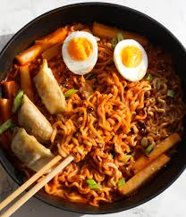

Buldak

Ingredients
- eggs
- ramen
- spicy sauce
- chili oil
- scallions
- shallots
- powder from packet
Steps
- first get your noodles and boil them
- then while its boiling add your spicy sauce
- while that's mixing you want to add your powder from the packet
- stir it up
- add your vegetables like scallions, shallots, bell pepper
- finnaly you want to top it off with some eggs and chili oil to add signifcant flavor